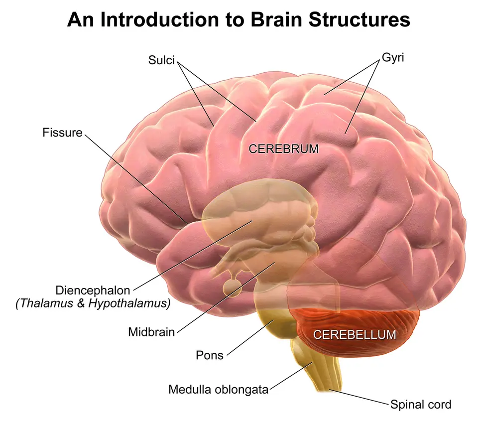

DX.5 — Tumeur intracrânienne
Une tête qui grossit trop vite, des vomissements matinaux ou une marche qui se dégrade font rechercher une tumeur du système nerveux central (SNC)S1. Le médecin prescrit alors une imagerie par résonance magnétique (IRM) avec contraste dans un centre spécialisé, puis oriente l’enfant vers l’oncologie pédiatriqueS1. La chirurgie ouvre presque toujours le traitement, tandis que la radiothérapie et la chimiothérapie dépendent du type tumoral et de l’âgeS1S4.
Ce cours sur la tumeur intracrânienne de l’enfant reprend les sources citées ; il n’a pas été validé cliniquement par un médecin.
1. Définition
Une tumeur intracrânienne de l’enfant correspond à une prolifération cellulaire primitive qui se développe dans la boîte crânienne, au sein du cerveau, du cervelet ou du tronc cérébralS1. L’Organisation mondiale de la santé (OMS) classe ces tumeurs en quatre grades, les grades I et II croissant lentement et les grades III et IV rapidementS1. Dans ce cours, la tumeur intéresse la macrocéphalie parce que la masse elle-même ou l’hydrocéphalie qu’elle provoque augmentent le périmètre crânien (PC)S4S5.
2. Épidémiologie (Suisse, puis Europe)
En Suisse, les médecins diagnostiquent chaque année 40 à 50 tumeurs du SNC avant 15 ans, avec un pic de fréquence entre 5 et 9 ansS1. Ces tumeurs représentent environ un quart des nouveaux cancers de l’enfant et se placent au deuxième rang, juste après les leucémiesS1. Le Registre suisse du cancer de l’enfant a recensé 591 gliomes de bas grade entre 1990 et 2019, soit 37,8 % des tumeurs du SNC enregistréesS2. Chez le nouveau-né, la revue italienne de Toniutti décrit au contraire des tumeurs rares, souvent supratentorielles et de pronostic sombreS4. Les chiffres suisses puis européens sont réunis dans un tableau, et la répartition des types tumoraux montre ce que l’âge change. Les limites de ces chiffres rappellent enfin ce que les sources lues ne mesurent pas.
Limites des chiffres lus
| Donnée manquante ou fragile | Raison | Conséquence pour le lecteur | Source |
|---|---|---|---|
| Part des tumeurs révélées par une macrocéphalie en Suisse | Le chiffre suisse couvre toutes les tumeurs du SNC | La fréquence dans la grande tête reste inconnue | S1 |
| Incidence suisse des tumeurs de haut grade | L’étude suisse lue ne porte que sur les gliomes de bas grade | Le cours ne donne pas d’incidence suisse globale par type | S2 |
| Incidence européenne des tumeurs néonatales | Registres incomplets, morts fœtales non comptées | Les chiffres néonataux restent des estimations | S4 |
| Enregistrement des adolescents de 16 et 17 ans | Certains sont traités dans des centres pour adultes | L’étude suisse corrige ce biais par pondération | S2 |
| Écart d’incidence entre pays | De 1,12 à 5,14 cas pour 100 000 personnes selon les pays | Les capacités diagnostiques inégales expliquent une partie de l’écart | S4 |
Ces limites n’affaiblissent pas la démarche, car la conduite à tenir repose sur les signes cliniques et non sur une probabilité chiffréeS1S7.
Chiffres utiles : Suisse, puis Europe
| Donnée | Valeur | Population et période | Source |
|---|---|---|---|
| Tumeurs du SNC diagnostiquées par an | 40 à 50 | Suisse, enfants jusqu’à 14 ans | S1 |
| Pic de fréquence | Entre 5 et 9 ans | Suisse | S1 |
| Part des nouveaux cancers de l’enfant | Environ un quart | Suisse | S1 |
| Gliomes de bas grade enregistrés | 591, soit 37,8 % des tumeurs du SNC | Suisse, 1990–2019, Registre suisse du cancer de l’enfant | S2 |
| Incidence des gliomes de bas grade | 1,4 pour 100 000 enfants par an | Suisse, 0–17 ans | S2 |
| Incidence avant 2 ans | 0,9 pour 100 000 par an, la plus basse | Suisse, 0–1 an | S2 |
| Évolution chez le nourrisson | De 0,85 à 1,01 pour 100 000 | Suisse, 1990–1999 puis 2010–2019 | S2 |
| Couverture du registre | Plus de 90 % des cancers avant 16 ans | Suisse | S2 |
| Tumeurs dans un syndrome de prédisposition | Environ 10 % | Enfants et adolescents | S1 |
| Macrocéphalie parmi les tumeurs néonatales | 50 à 60 % | Revue européenne, 2024 | S4 |
| Césarienne lors d’une tumeur congénitale | 60 % des cas | Revue européenne, 2024 | S4 |
Le registre suisse sert de base fiable, car tous les centres d’oncologie pédiatrique lui déclarent directement leurs patientsS2. La macrocéphalie domine surtout le tableau néonatal, alors que l’enfant plus âgé se présente plutôt avec des céphalées ou des vomissementsS4S1.
Types tumoraux : ce que l’âge change
| Groupe | Fréquence ou trait | Âge typique | Source |
|---|---|---|---|
| Gliomes de bas grade | Environ 50 % des tumeurs cérébrales de l’enfant | Enfance, surtout 2–11 ans en Suisse | S1S2 |
| Astrocytome pilocytique | 58,2 % des gliomes de bas grade suisses | Enfance | S2 |
| Médulloblastome | Tumeur embryonnaire la plus fréquente, grade OMS IV | Enfance | S1 |
| Tératome | Un tiers à la moitié des tumeurs congénitales | Avant la 22e semaine de grossesse | S4 |
| Gliomes néonataux | 18 à 47 % des tumeurs du nouveau-né | Après la 32e semaine pour les astrocytomes | S4 |
| Tumeurs des plexus choroïdes | 5 à 20 % des tumeurs du nouveau-né | Nouveau-né, ventricules latéraux | S4 |
| Gliomes de haut grade | Pronostic globalement mauvais | Tout âge ; meilleur chez le nourrisson | S1S4 |
Le nouveau-né développe surtout des tumeurs supratentorielles, tandis que l’enfant plus âgé présente plus souvent une tumeur infratentorielle de la fosse postérieureS4. En Suisse, les gliomes de bas grade se répartissent presque à parts égales entre l’étage supratentoriel (48,4 %) et infratentoriel (45,0 %)S2.
3. Physiopathologie
La tumeur grossit la tête de deux façons : elle occupe elle-même de la place, ou elle bloque l’écoulement du liquide céphalorachidien (LCR) et crée une hydrocéphalieS4. Les tumeurs infratentorielles figurent ainsi parmi les causes les plus fréquentes d’hydrocéphalie obstructive de l’enfant, avec la sténose de l’aqueduc et les malformations de ChiariS5. Un papillome des plexus choroïdes peut aussi produire trop de LCR, ce qui donne une hydrocéphalie communicanteS5. Les mécanismes de la grande tête et les anomalies génétiques sont détaillés dans deux fenêtres.
Mécanismes : pourquoi la tête grossit
| Mécanisme | Exemple | Conséquence clinique | Source |
|---|---|---|---|
| Effet de masse direct | Grand tératome ou gliome du nouveau-né | Macrocéphalie parfois sans symptôme, car le crâne s’adapte | S4 |
| Obstruction des voies du LCR | Tumeur de la fosse postérieure, masse du foramen de Monro | Hydrocéphalie, fontanelle bombée, vomissements | S5S4 |
| Production excessive de LCR | Papillome des plexus choroïdes | Hydrocéphalie communicante | S5 |
| Saignement tumoral | Tumeur vascularisée du nouveau-né | Aggravation brutale, convulsions | S4 |
| Atteinte hypothalamique | Gliome de bas grade diencéphalique | Retard pondéral et vomissements sans cause digestive | S1 |
Chez le nouveau-né, la plasticité du crâne permet une grande tête longtemps silencieuse, ce qui explique les diagnostics tardifs sans mesure régulièreS4. Chez l’enfant plus âgé, les sutures fermées transforment au contraire la même masse en hypertension intracrânienne (HTIC) rapidement symptomatiqueS5.
Génétique tumorale et prédisposition
| Élément | Ce qu’il faut savoir | Utilité pratique | Source |
|---|---|---|---|
| Facteur de risque environnemental | Seule l’exposition aux rayonnements ionisants est reconnue | Éviter les scanners inutiles (déduction) | S1 |
| Neurofibromatose de type 1 (NF1) | Gène NF1, gliomes de bas grade | Taches café au lait à rechercher | S1 |
| Syndrome de Li-Fraumeni | Gène TP53 (tumor protein p53), gliomes de haut grade, médulloblastome, carcinome des plexus | Anamnèse familiale de cancers | S1S4 |
| Prédisposition rhabdoïde | Gène SMARCB1, tumeur tératoïde rhabdoïde atypique | Étude génétique obligatoire avant 12 mois | S1S4 |
| Syndrome de Gorlin | Gène PTCH1 (patched 1), médulloblastome du nourrisson | Médulloblastomes congénitaux presque tous activés par la voie SHH (sonic hedgehog) | S4 |
| Syndrome de Cowden | Gène PTEN (phosphatase and tensin homolog), gangliocytome cérébelleux, méningiome | Lien avec le DX.10 | S4 |
| Fusions NTRK (neurotrophin receptor tyrosine kinase) | 40 % des gliomes de haut grade non tronculaires du nourrisson | Cible d’un traitement ciblé | S4 |
Le diagnostic moléculaire repose aujourd’hui sur la méthylation de l’ADN tumoral et le séquençage d’un panel de gènes, car l’histologie seule ne suffit plusS1. La découverte d’un syndrome de prédisposition permet ensuite d’inclure l’enfant et sa fratrie dans un programme de dépistage précoceS1S4.
4. Démarche diagnostique
La démarche commence par la mesure du PC sur la courbe suisse, puis elle cherche les signes d’HTIC, qui imposent une orientation neurochirurgicale urgenteS3S5. Le National Institute for Health and Care Excellence (NICE) demande une orientation immédiate si le PC croise deux lignes de centiles avec un signe d’HTICS7. Sans signe d’HTIC, une nouvelle anomalie cérébelleuse ou neurologique centrale justifie encore une orientation très urgente, dans les 48 heuresS6. Les étapes ordonnées de la démarche et les délais selon la situation se lisent dans deux tableaux. Les scénarios à long délai montrent enfin où le diagnostic se perd le plus souvent.
Scénarios qui retardent le diagnostic
| Scénario | Pourquoi il trompe | Réflexe attendu | Source |
|---|---|---|---|
| Retard pondéral avec nausées et vomissements, sans cause digestive | Le tableau évoque d’abord une maladie digestive | IRM cérébrale pour exclure un syndrome diencéphalique | S1 |
| Céphalées et vomissements à jeun | Les symptômes d’HTIC ne sont pas toujours reconnus | Examen neurologique et fond d’œil | S1 |
| Gliome de bas grade d’évolution lente | Les symptômes chroniques se dégradent lentement | Revoir l’enfant et dater l’évolution | S1 |
| Consultations répétées, résultats scolaires en baisse | Chaque visite paraît banale isolément | Additionner les symptômes selon la liste par âge | S1 |
| Nouveau-né à grosse tête sans autre signe | Le crâne souple masque l’HTIC | Mesure répétée et échographie transfontanellaire | S4 |
| Torticolis ou tête penchée persistants | Le signe paraît orthopédique | Penser à la fosse postérieure (déduction de la liste par âge du dépliant allemand) | S1 |
Ces scénarios partagent un point commun, puisque chaque symptôme isolé semble banal alors que leur addition oriente vers le cerveauS1.
Démarche diagnostique : de la mesure au centre spécialisé
| Étape | Geste précis | Seuil ou constat | Conduite | Source |
|---|---|---|---|---|
| 1. Mesurer | PC mesuré trois fois, valeur la plus longue portée sur la courbe nationale | Croisement de deux lignes de centiles | Évaluation pédiatrique avec imagerie | S7S3 |
| 2. Chercher l’HTIC | Fontanelle, regard, vomissements, marche, comportement | Un seul signe suffit | Orientation immédiate | S5S7 |
| 3. Examiner | Neurologie, yeux avec fond d’œil, peau, croissance, puberté | Déficit focal, œdème papillaire, cassure staturale | IRM rapide | S1 |
| 4. Imager | IRM cérébrale avec contraste dans un centre spécialisé | Masse confirmée | Transfert en oncologie pédiatrique | S1 |
| 5. Étendre | IRM médullaire juste après l’IRM cérébrale | Métastase visible le long du névraxe | Stadification par l’équipe | S1 |
| 6. Caractériser | Histologie, méthylation de l’ADN, panel de gènes | Type et sous-groupe moléculaire | Discussion en colloque interdisciplinaire | S1 |
La première étape décide de tout, car une tête qui grossit vite reste souvent le seul signe chez le nourrisson dont la fontanelle est ouverteS4. Le médecin de premier recours garde la responsabilité de la détection, alors que le traitement relève ensuite d’un centre spécialiséS1.
Délais : quand orienter et vers qui
| Situation | Délai | Destinataire | Source |
|---|---|---|---|
| Fontanelle tendue, regard en coucher de soleil, vomissements, ataxie ou céphalée avec PC qui croise deux lignes | Immédiat | Pédiatrie hospitalière | S7 |
| Trouble de conscience ou déficit moteur focal brutal | Urgences | Imagerie en urgence | S1 |
| Nouvelle anomalie cérébelleuse ou neurologique centrale | Dans les 48 heures | Évaluation spécialisée | S6 |
| PC qui croise deux lignes, sans signe d’HTIC | Évaluation programmée avec imagerie | Pédiatrie | S7 |
| Deux symptômes ou plus de la liste par âge | Investigations rapides | Pédiatre, puis imagerie | S1 |
| Un seul symptôme de la liste | Consultation médicale | Médecin traitant | S1 |
Le délai entre premiers symptômes et diagnostic reste long malgré l’IRM disponible, surtout pour les gliomes de bas grade d’évolution chroniqueS1. Des campagnes de sensibilisation comme HeadSmart au Royaume-Uni ou FIT (« FIT im Kopf », en forme dans sa tête) en Allemagne ont pourtant raccourci ce délaiS1.
5. Anamnèse ciblée et drapeaux rouges
L’anamnèse recherche d’abord les symptômes d’HTIC, puis les signes de localisation, et enfin les indices d’un syndrome de prédisposition dans la familleS1S5. Des consultations répétées pour des symptômes chroniques, une baisse des résultats scolaires ou une motricité qui se dégrade doivent faire évoquer une tumeur cérébraleS1. Les questions ciblées et les drapeaux rouges par âge reprennent la liste du dépliant germanophone FIT.
Questions ciblées et leur sens
| Question | Réponse qui inquiète | Interprétation | Source |
|---|---|---|---|
| Le PC a-t-il changé de couloir sur la courbe ? | Oui, de deux lignes ou plus | Processus évolutif : hydrocéphalie ou masse | S7 |
| L’enfant vomit-il le matin, à jeun ? | Oui, de façon répétée | HTIC, souvent méconnue | S1 |
| Les céphalées réveillent-elles ou se répètent-elles ? | Oui | HTIC dès l’âge scolaire | S1 |
| La marche ou l’équilibre ont-ils changé ? | Oui | Atteinte cérébelleuse de la fosse postérieure | S1S6 |
| Le poids stagne-t-il malgré une alimentation correcte ? | Oui, avec vomissements | Syndrome diencéphalique d’un gliome de bas grade | S1 |
| La puberté est-elle précoce ou arrêtée ? | Oui | Atteinte hypothalamo-hypophysaire | S1 |
| Des parents ont-ils eu plusieurs cancers ? | Oui, surtout jeunes | Syndrome de prédisposition | S1S4 |
| L’enfant a-t-il reçu une irradiation de la tête ? | Oui | Seul facteur environnemental reconnu | S1 |
L’anamnèse familiale détaillée oriente vers un syndrome de prédisposition, alors que l’anamnèse personnelle date le début et la vitesse des symptômesS1. La présence de plusieurs cancers dans la lignée parentale justifie une enquête génétique, même lorsque l’enfant paraît en bonne santéS4.
Drapeaux rouges par âge (dépliant FIT, repris par Paediatrica)
| Âge | Symptômes possibles | Conduite | Source |
|---|---|---|---|
| 0 à 5 ans | Vomissements persistants ou récidivants ; troubles de l’équilibre, de la coordination ou de la marche ; changement de comportement ; mouvements oculaires inhabituels ; convulsions sans fièvre ; tête tenue de façon inhabituelle | Un symptôme : consultation ; deux ou plus : investigations rapides | S1 |
| 6 à 12 ans | Céphalées persistantes ou récidivantes ; vomissements ; troubles de l’équilibre ; mouvements oculaires inhabituels ; vue trouble ou double ; changement de comportement ; convulsions sans fièvre ; tête tenue de façon inhabituelle | Même règle | S1 |
| 12 à 18 ans | Céphalées ; vomissements ; troubles de l’équilibre ; vue trouble ou double ; changement de comportement ; convulsions sans fièvre ; puberté retardée ou arrêtée, croissance ralentie | Même règle | S1 |
| Nouveau-né et nourrisson | Croissance exponentielle du PC, fontanelle bombée, sutures qui tardent à se fermer, somnolence, apnées, retard du développement | Imagerie sans délai | S4 |
Le dépliant fixe une règle simple, car un seul symptôme justifie une consultation, tandis que deux symptômes ou plus imposent des investigations rapidesS1. Chez le nourrisson, la revue européenne ajoute des signes discrets comme les apnées ou les mouvements oculaires anormauxS4.
6. Examen physique ciblé, région par région
L’examen physique suit les régions dans un ordre fixe : tête, yeux, système nerveux, peau, croissance, puis état généralS1S5. La revue suisse exige à chaque fois la croissance avec le PC, les signes pubertaires, un examen neurologique, ophtalmologique et dermatologiqueS1. Chaque région possède sa fenêtre, qui contient gestes, constats et signification : tête, yeux, neurologie, peau, croissance et puberté et état général.
Tête et crâne
| Geste | Constat anormal | Signification | Source |
|---|---|---|---|
| Mesurer trois fois le PC | Croissance qui croise les centiles | Masse ou hydrocéphalie évolutive | S7S1 |
| Palper la fontanelle | Tendue ou bombée | HTIC | S5 |
| Palper les sutures | Retard de fermeture, disjonction | Pression intracrânienne prolongée | S4 |
| Ausculter la fontanelle | Souffle | Malformation vasculaire plutôt que tumeur | S5 |
| Observer la position de la tête | Torticolis, tête penchée, raideur de nuque | Tumeur de la fosse postérieure (déduction de la liste FIT) | S1 |
Le souffle à la fontanelle oriente vers une cause vasculaire, ce qui change l’urgence et l’imagerie demandéeS5.
Yeux et vision
| Geste | Constat anormal | Signification | Source |
|---|---|---|---|
| Réflexes pupillaires | Asymétrie, réponse lente | Atteinte des voies optiques ou du tronc | S1 |
| Motricité oculaire | Paralysie du sixième nerf, regard en coucher de soleil | HTIC | S7 |
| Champ visuel | Amputation | Tumeur suprasellaire ou des voies optiques | S1 |
| Fond d’œil | Œdème papillaire | HTIC ; examen ophtalmologique complet | S1 |
| Mouvements oculaires | Mouvements inhabituels | Symptôme de la liste par âge ; imagerie rapide s’il s’associe à un autre | S1S4 |
Un examen ophtalmologique complet est indiqué en cas d’hydrocéphalie obstructive, d’œdème papillaire, de tumeur suprasellaire ou de lésion des voies optiquesS1.
Système nerveux
| Geste | Constat anormal | Signification | Source |
|---|---|---|---|
| Observer la marche | Ataxie, élargissement du polygone | Atteinte cérébelleuse | S1S6 |
| Épreuves de coordination | Dysmétrie, tremblement intentionnel | Anomalie cérébelleuse nouvelle | S6 |
| Force et réflexes | Déficit focal | Lésion hémisphérique ou tronculaire | S1 |
| Vigilance | Somnolence, irritabilité extrême | HTIC | S5 |
| Développement | Régression des acquisitions | Tumeur ou hydrocéphalie évolutive | S4S5 |
Le trouble moteur focal brutal ou l’altération de la conscience représentent souvent des signes tardifs, ce qui justifie la recherche active des signes précocesS1.
Peau : marqueurs de prédisposition
| Constat | Syndrome évoqué | Tumeur associée | Source |
|---|---|---|---|
| Taches café au lait multiples | Neurofibromatose de type 1 | Gliome de bas grade, gliome des voies optiques | S1S4 |
| Neurofibrome plexiforme de la face | Neurofibromatose de type 1 | Extension intracrânienne possible | S4 |
| Lipomes, hémangiomes, lentigines du pénis | Syndrome lié à PTEN | Gangliocytome cérébelleux, méningiome | S4 |
L’examen dermatologique permet surtout de dépister un syndrome de prédisposition, car son identification modifie la surveillance de toute la familleS1.
Croissance et puberté
| Mesure | Constat anormal | Signification | Source |
|---|---|---|---|
| Poids et taille sur la courbe suisse | Cassure pondérale chronique | Syndrome diencéphalique | S1S3 |
| Vitesse de croissance | Croissance ralentie | Atteinte hypothalamo-hypophysaire | S1 |
| Stade pubertaire | Puberté précoce | Tumeur de la région hypothalamique | S1 |
| Stade pubertaire chez l’adolescent | Puberté retardée ou arrêtée | Atteinte hypophysaire | S1 |
Un enfant qui maigrit et vomit sans cause digestive doit toujours faire évoquer un gliome de bas grade diencéphaliqueS1.
État général et circulation
| Constat | Signification | Conduite | Source |
|---|---|---|---|
| Insuffisance cardiaque à haut débit du nouveau-né | Masse très vascularisée | Imagerie et avis spécialisé | S4 |
| Apnées du nouveau-né | HTIC | Surveillance continue | S4 |
| Convulsions | Irritation corticale ou saignement tumoral | Traitement de la crise et imagerie | S4S5 |
Ces signes généraux restent rares, mais ils signalent une situation instable qui impose l’hospitalisationS4.
7. Approche syndromique
Le siège de la tumeur explique le syndrome clinique, car chaque région du cerveau exprime son atteinte de façon différenteS1. Le tableau des sièges relie chaque région à ses signes, et la figure guidée situe ces régions sur une illustration en couleurs.
Syndromes de localisation
| Région | Syndrome | Tumeurs fréquentes | Source |
|---|---|---|---|
| Fosse postérieure (cervelet) | Ataxie, vomissements, céphalées, hydrocéphalie obstructive | Médulloblastome, épendymome, tumeur tératoïde rhabdoïde atypique | S4S5 |
| Tronc cérébral | Troubles de la marche et de l’équilibre (déduction anatomique) | Gliome infiltrant du tronc, de pronostic presque toujours sombre | S1 |
| Diencéphale et hypothalamus | Cassure pondérale, vomissements, troubles visuels | Gliome de bas grade | S1S4 |
| Région suprasellaire | Troubles visuels, déficits hormonaux | Craniopharyngiome, tératome | S1S4 |
| Hémisphères cérébraux | Convulsions, déficit focal, changement de comportement (déduction anatomique) | Gliomes, tumeurs embryonnaires supratentorielles | S1S4 |
| Ventricules latéraux | Hydrocéphalie, grosse tête du nourrisson | Tumeurs des plexus choroïdes | S4 |
La fosse postérieure reste le siège habituel chez l’enfant plus âgé, tandis que le nouveau-né développe surtout des masses supratentorielles volumineusesS4.
Figure guidée : régions du cerveau et sièges tumoraux
Régions du cerveau où naissent les tumeurs de l’enfant. Blausen Medical fournit cette illustration en couleurs sous licence CC BY 3.0S8.

Le lecteur doit d’abord regarder seul le dessin et repérer le cervelet rouge, le tronc jaune et les hémisphères roses avant la copie annotée.
La copie annotée place chaque repère numéroté dans l’ordre exact de la lecture guidée qui suit.
- 1. Le repère 1 montre le cervelet dans la fosse postérieure, où siègent le médulloblastome et l’épendymome de l’enfantS8S4.
- 2. Le repère 2 montre le pont du tronc cérébral, siège du gliome infiltrant au pronostic sombreS8S1.
- 3. Le repère 3 montre le diencéphale avec le thalamus et l’hypothalamus, siège du gliome responsable du syndrome diencéphaliqueS8S1.
- 4. Le repère 4 montre un hémisphère cérébral, où naissent la plupart des tumeurs congénitales supratentoriellesS8S4.
- 5. Le repère 5 montre la moelle épinière, que l’IRM médullaire explore à la recherche de métastasesS8S1.
Ce que l’image décide. Une ataxie oriente vers le repère 1, une cassure pondérale vers le repère 3, et toute tumeur confirmée impose l’exploration du repère 5S1.
8. Diagnostic positif et critères
Le diagnostic positif repose sur l’IRM, qui montre la masse, puis sur l’histologie complétée par l’analyse moléculaire, qui en précise la natureS1S4. Certaines tumeurs, comme les gliomes des voies optiques d’une NF1, se diagnostiquent cependant par la seule imagerie, sans confirmation histologiqueS1. Les critères positifs et les confusions distinguent la tumeur des autres grandes têtes du lot. Les grades de l’OMS précisent ensuite ce que le grade annonce pour la croissance et le traitement.
Grades de l’OMS : ce qu’ils annoncent
| Grade | Croissance | Exemple chez l’enfant | Conséquence thérapeutique | Source |
|---|---|---|---|---|
| I | Lente | Astrocytome pilocytique, la majorité des gliomes de bas grade suisses | Chirurgie souvent suffisante | S1S2 |
| II | Lente, parfois infiltrante | Autres gliomes de bas grade | Chirurgie, observation ou chimiothérapie | S1S2 |
| III | Rapide | Gliome de haut grade | Chirurgie puis radiothérapie et chimiothérapie | S1 |
| IV | Rapide | Médulloblastome, glioblastome | Traitements multimodaux selon le protocole | S1 |
Le grade ne résume cependant pas le risque, car un gliome de bas grade de la ligne médiane échappe souvent à la chirurgie et évolue de façon chroniqueS1.
Critères positifs et diagnostics à ne pas confondre
| Élément | Critère de la tumeur | Ce qui oriente ailleurs | Source |
|---|---|---|---|
| Imagerie | Masse solide, kystique ou calcifiée, avec ou sans hydrocéphalie | Ventricules dilatés sans masse : hydrocéphalie (DX.3) | S4S5 |
| Histologie | Type tumoral et grade OMS | Collection hémorragique : hématome sous-dural (DX.4) | S1 |
| Analyse moléculaire | Profil de méthylation, panel de gènes | Mégalencéphalie sans masse : DX.1 ou DX.10 | S1S5 |
| Évolution du PC | Croisement des centiles | PC élevé et stable avec parent macrocéphale : DX.1 | S7 |
| Contexte | Symptômes progressifs sur des semaines | Espaces sous-arachnoïdiens larges et ventricules normaux : DX.2 | S1S5 |
La masse visible à l’IRM ne suffit pas, car la classification actuelle exige un diagnostic intégré, histologique et moléculaireS1. Les colloques interdisciplinaires tranchent les cas que la classification ne range dans aucune entité préciseS1.
9. Examens complémentaires
L’IRM avec produit de contraste reste l’examen de référence quel que soit l’âge, même lorsqu’une anesthésie est nécessaireS1. Le scanner ne doit servir qu’exceptionnellement, car il ne remplace pas l’IRM et expose l’enfant aux rayonnements ionisantsS1S5. Le tableau des examens ciblés précise indication, seuil, interprétation et conduite pour chaque examen. Le bilan avant traitement précise les examens d’organe, et la caractérisation moléculaire montre ce qui change le traitement.
Examens ciblés : indication, seuil, interprétation, conduite
| Examen | Indication | Seuil ou résultat | Interprétation | Conduite | Source |
|---|---|---|---|---|---|
| Échographie transfontanellaire | Nourrisson à fontanelle ouverte, premier examen | Masse ou hydrocéphalie | Signe direct ou indirect de tumeur | IRM de confirmation | S4S5 |
| IRM cérébrale avec contraste | Toute suspicion, à tout âge | Masse, prise de contraste, œdème | Siège, taille, effet de masse | Centre d’oncologie pédiatrique | S1 |
| IRM médullaire | Toute tumeur intracrânienne confirmée | Lésion le long du névraxe | Métastase macroscopique | Stadification, choix de l’irradiation | S1 |
| Scanner cérébral | Urgence ou étude osseuse, exceptionnellement | Calcifications, saignement | Complément, jamais substitut | IRM dès que possible | S1S5 |
| Ponction lombaire | Selon le type tumoral suspecté | Cellules tumorales | Dissémination dans le LCR | Stadification | S4 |
| Marqueurs tumoraux | Selon le type suspecté | Élévation | Orientation histologique | Complément de l’histologie | S4 |
| IRM fœtale | Masse ou macrocéphalie à l’échographie prénatale | Masse caractérisée | Siège et structures voisines | Conseil prénatal multidisciplinaire | S4 |
L’échographie ouvre la démarche chez le nouveau-né, mais seule l’IRM confirme la lésion, précise ses caractères et prépare la chirurgieS4. Les techniques d’« alimentation et emmaillotage » évitent parfois la sédation du nouveau-né, dont le risque anesthésique peut être élevéS4S5.
Bilan avant traitement selon le siège
| Situation | Examen | But | Source |
|---|---|---|---|
| Tumeur suprasellaire | Bilan endocrinien avant la chirurgie | Évaluer la fonction hypophysaire | S1 |
| Hydrocéphalie obstructive ou œdème papillaire | Examen ophtalmologique complet | Documenter l’atteinte visuelle | S1 |
| Tumeur suprasellaire ou des voies optiques | Examen ophtalmologique complet | Champ visuel et acuité | S1 |
| Toute tumeur du SNC | Aucun bilan d’extension hors du SNC en routine | Les métastases restent presque toujours dans le SNC | S1 |
| Tumeur néonatale | Étude génétique détaillée | Chercher un syndrome de prédisposition | S4 |
Le bilan reste centré sur le SNC, car les métastases de ces tumeurs se situent presque exclusivement dans le cerveau et la moelleS1.
Caractérisation moléculaire : ce qu’elle change
| Analyse | Résultat possible | Conséquence | Source |
|---|---|---|---|
| Méthylation de l’ADN tumoral | Classe tumorale précise | Classement et protocole adaptés | S1 |
| Panel de gènes | Anomalie de la voie MAPK (mitogen-activated protein kinase) dans les gliomes de bas grade | Thérapie ciblée possible | S1 |
| Recherche de fusions | Fusion NTRK ou d’une autre kinase chez le nourrisson | Inhibiteur ciblé, hors information professionnelle suisse (AIPS) dans ce cours | S4 |
| Mutation BRAF (gène B-Raf) | Gliome de bas ou de haut grade | Inhibiteur de BRAF, hors AIPS dans ce cours | S4 |
| Étude constitutionnelle | Variant germinal SMARCB1, TP53, PTCH1 | Surveillance familiale | S1S4 |
Ces techniques hautement spécialisées restent centralisées, ce qui impose souvent l’envoi des tissus vers d’autres pays européensS1.
10. Arbre décisionnel
L’arbre décisionnel part du PC mesuré et descend jusqu’au traitement en centre spécialisé ; l’arbre complet précise chaque embranchement.
Arbre décisionnel : grosse tête et suspicion de tumeur
- Le médecin mesure trois fois le PC et reporte la plus longue mesure sur la courbe suisseS7S3.
- Si un signe d’HTIC apparaît, il oriente l’enfant immédiatement vers la pédiatrie hospitalièreS7.
- Si une nouvelle anomalie neurologique centrale apparaît sans HTIC, il demande une évaluation spécialisée dans les 48 heuresS6.
- Si le PC croise deux lignes sans autre signe, il organise une évaluation pédiatrique avec imagerieS7.
- Chez le nourrisson à fontanelle ouverte, l’échographie précède l’IRM, qui confirme ensuite la masseS4.
- Lorsque l’IRM confirme une tumeur, l’enfant rejoint un centre d’oncologie pédiatrique, qui ajoute l’IRM médullaireS1.
- Le neurochirurgien traite l’hydrocéphalie menaçante et obtient le tissu, puis le colloque interdisciplinaire choisit le protocoleS1S4.
| Branche | Critère | Décision | Source |
|---|---|---|---|
| HTIC | Fontanelle tendue, vomissements, coucher de soleil, ataxie, céphalée | Orientation immédiate | S7 |
| Signes neurologiques nouveaux | Cervelet ou fonction centrale | Orientation dans les 48 heures | S6 |
| PC seul | Croisement de deux lignes | Imagerie programmée | S7 |
| Masse confirmée | IRM avec contraste | Centre spécialisé et IRM médullaire | S1 |
11. Prise en charge selon les recommandations suisses
11.A But : le traitement vise d’abord à lever l’hydrocéphalie qui menace la vie, puis à guérir la tumeur en limitant les séquelles tardivesS4S1. Il cherche aussi à obtenir le tissu nécessaire au diagnostic, car l’étendue de l’exérèse conditionne directement le pronosticS4.
11.B Moyens : la chirurgie représente le premier geste, puis la radiothérapie ou la chimiothérapie suivent selon le type tumoral et l’âgeS1. En Suisse, ces traitements se donnent uniquement dans le cadre d’études internationales, comme le précise la revue suisseS1. La Suisse appartient en effet au groupe germanophone HIT (Hirntumor, réseau d’étude des tumeurs cérébrales) et au groupe européen des tumeurs cérébralesS1. Le plan de traitement structuré détaille chaque moyen, et la fiche de la dexaméthasone reprend l’AIPS mot pour mot. Le rôle du médecin de premier recours reste enfin décisif avant, pendant et après le traitement.
Rôle du médecin de premier recours
| Moment | Action du médecin de premier recours | Objectif | Source |
|---|---|---|---|
| Avant le diagnostic | Mesurer le PC, reconnaître les symptômes par âge, orienter dans le bon délai | Raccourcir l’intervalle diagnostique | S1S7 |
| Au diagnostic | Transmettre l’anamnèse familiale et la courbe de croissance | Aider à dépister un syndrome de prédisposition | S1 |
| Pendant le traitement | Collaborer étroitement avec les oncologues pédiatres hospitaliers | Assurer la continuité des soins | S1 |
| Après le traitement | Repérer les séquelles scolaires, endocriniennes et neurologiques | Orienter vers la réadaptation | S1S4 |
La collaboration étroite entre pédiatres praticiens et oncologues pédiatres hospitaliers représente un facteur essentiel de la prise en chargeS1.
Traitement structuré : moyen, modalité, durée, contrôle, échec
| Moyen | Modalité précise | Durée ou moment | Contrôle | Critère d’échec et suite | Source |
|---|---|---|---|---|---|
| Dérivation du LCR | Drainage ventriculaire externe, dérivation ventriculopéritonéale ou ventriculocisternostomie du troisième ventricule | En urgence si hydrocéphalie menaçante | Vigilance, fontanelle, PC | Récidive des signes d’HTIC : reprise neurochirurgicale | S4 |
| Chirurgie tumorale | Biopsie, geste endoscopique ou robotisé, jusqu’à l’exérèse totale | Premier geste, parfois en deux temps | IRM postopératoire (déduction) | Exérèse incomplète : colloque et traitement adjuvant | S1S4 |
| Observation | Petit gliome de bas grade sans trouble neurologique | Prolongée | Clinique et imagerie | Progression ou symptômes : traitement | S1 |
| Radiothérapie | Locale, cérébrale ou craniospinale ; photons ou protons à l’Institut Paul Scherrer de Villigen | Après la chirurgie dans les tumeurs de haut grade | Neurocognition, endocrinologie | Évitée avant 3 ans | S1S4 |
| Chimiothérapie | Molécules et doses fixées par le protocole d’étude ; voie intraventriculaire par réservoir d’Ommaya ou haute dose avec autogreffe | Selon le protocole | Effets indésirables et réponse | Échec ou rechute : nouvelle discussion | S1 |
| Thérapie ciblée | Inhibiteurs de la voie MAPK, de BRAF ou de NTRK, hors AIPS dans ce cours | Dans une étude, comme l’étude européenne LOGGIC (Low-Grade Glioma in Children) | Efficacité et tolérance | Progression : changement de stratégie | S1S4 |
| Corticoïde | Dexaméthasone selon l’AIPS pour l’œdème cérébral | Courte, avec décroissance progressive | HTIC, signes d’infection | HTIC persistante : geste neurochirurgical | AIPS 48670 |
| Réadaptation | Clinique spécialisée comme Katharinenhöhe ou Tannheim | Après le traitement | Scolarité, formation | Difficultés persistantes : soutien prolongé | S1 |
La chimiothérapie prend une place majeure chez le petit enfant, car ses effets tardifs restent moins sévères que ceux de la radiothérapieS1. Les protons irradient de façon plus ciblée et réduisent ainsi les troubles neurocognitifs tardifs ; l’anesthésie reste souvent nécessaire chez le jeune enfantS1.
Dexaméthasone — Fortecortin® comprimés à 4 mg (n° 48670)AIPS 48670
| Rubrique | Texte de l’AIPS suisse |
|---|---|
| Indication retenue | L’AIPS cite l’« Œdème cérébral (provoqué par: tumeur cérébrale, traumatisme cranio-cérébral, hémorragie intracérébrale, interventions neurochirurgicales, abcès cérébral, encéphalite, méningite, radiolésions) »AIPS 48670. |
| Dose de l’adulte | Dans les cas graves, l’AIPS commence par la voie intraveineuse, puis passe « au traitement par voie orale à raison de 4 à 16 mg par jour »AIPS 48670. |
| Forme légère | L’AIPS précise : « Dans les cas plus légers, l'administration orale de 2 à 8 mg suffit, le cas échéant »AIPS 48670. |
| Enfant | L’AIPS indique : « Chez les enfants en bas âge et les enfants âgés de 0 à 11 ans, des doses plus faibles que celles administrées aux adultes sont généralement suffisantes »AIPS 48670. |
| Durée et arrêt | L’AIPS demande de « réduire la posologie élevée de départ progressivement (par intervalles de quelques jours) dès que l'état du patient le permet »AIPS 48670. |
| Place du corticoïde | L’AIPS rappelle : « En cas d'œdème cérébral aigu et d'état asthmatique, Fortecortin ne remplace pas le traitement classique de ces affections, mais s'y ajoute »AIPS 48670. |
| Contre-indications | « Ne pas utiliser ce médicament en cas d'hypersensibilité à l'un des composants »AIPS 48670. |
| Grossesse | L’AIPS précise que Fortecortin « ne doit pas être administré pendant la grossesse, et en particulier au cours du premier trimestre, sauf en cas de nécessité absolue »AIPS 48670. |
| Allaitement | L’AIPS conclut que « les mères recevant des glucocorticoïdes pendant l'allaitement doivent arrêter d'allaiter »AIPS 48670. |
| Mise à jour | Information mise à jour en janvier 2022, consultée le 13.11.2026AIPS 48670. |
L’équipe de neuro-oncologie choisit la dose de l’enfant, car l’AIPS ajuste la posologie à la gravité et à la réponse plutôt qu’au poidsAIPS 48670.
11.C Surveillance : après le traitement, l’enfant garde un suivi neurologique, endocrinien, visuel et auditif, car les séquelles touchent jusqu’à toutes ces fonctionsS4. La surveillance datée précise ce que contrôle chaque intervenant et le seuil qui fait réagir.
Surveillance : quoi, quand, seuil d’alerte
| Domaine | Ce que l’on contrôle | Quand | Seuil d’alerte | Source |
|---|---|---|---|---|
| Avant le diagnostic | PC, signes d’HTIC, neurologie | À chaque contrôle de santé | Croisement de deux lignes ou signe d’HTIC | S7 |
| Sous dexaméthasone | Vigilance, signes d’infection, croissance | Pendant toute la décroissance | Infection masquée ou HTIC persistante | AIPS 48670 |
| Neurologie et développement | Examen neurologique et neurodéveloppemental | Régulièrement après le traitement | Déficit persistant ou nouveau | S4 |
| Endocrinologie | Croissance, puberté, équilibre hormonal | Régulièrement, surtout après atteinte hypothalamo-hypophysaire | Cassure de croissance, puberté anormale | S4 |
| Vision et audition | Examens périodiques | Régulièrement | Baisse d’acuité ou d’audition | S4 |
| Second cancer | Dépistage adapté au syndrome | Toute la vie en cas de prédisposition | Nouvelle tumeur | S4S1 |
| Scolarité et formation | Résultats scolaires, insertion | Long terme | Échec scolaire | S1 |
Le rythme des IRM de contrôle relève du protocole d’étude, car les sources lues ne le fixent pas pour l’ensemble des tumeursS1.
11.D Pronostic : le pronostic varie fortement selon le groupe tumoral, d’une excellente survie globale jusqu’à un gliome infiltrant du tronc presque toujours fatalS1. Le tableau pronostique réunit les chiffres suisses et européens lus, ainsi que la fréquence des séquelles.
Pronostic : chiffres et séquelles
| Situation | Pronostic | Source |
|---|---|---|
| Gliome de bas grade en Suisse | Survie à long terme supérieure à 90 % | S2 |
| Gliome de bas grade traité par chirurgie puis radiothérapie ou chimiothérapie | Survie la plus basse, 40 % à 5 ans et 20 % à 10 ans | S2 |
| Médulloblastome | Survie de 70 à 80 % | S1 |
| Gliome infiltrant du tronc cérébral | Pronostic presque toujours peu optimiste | S1 |
| Tumeur du nouveau-né | Survie globale inférieure à 30 % | S4 |
| Gliome de haut grade du nourrisson | Survie meilleure que chez l’enfant plus âgé | S4 |
| Survivants à long terme | Déficits neurocognitifs chez 40 à 100 % | S4 |
La qualité de la survie reste difficile, car la tumeur et ses traitements laissent des séquelles neurologiques, endocriniennes et neurocognitives, surtout chez le très jeune enfantS1.
12. Prévention
Aucune prévention primaire n’existe, puisque l’étiologie reste largement inconnue et que seule l’irradiation ionisante est reconnue comme facteur de risqueS1. La prévention porte donc sur le diagnostic précoce, la limitation des scanners inutiles et le dépistage des familles prédisposées ; les mesures concrètes les détaillent.
Mesures de prévention et de détection précoce
| Niveau | Mesure | Pour qui | Source |
|---|---|---|---|
| Primaire | Préférer l’IRM ou l’échographie au scanner chez l’enfant (déduction du seul facteur de risque connu) | Tout enfant | S1S5 |
| Secondaire | Mesurer le PC à chaque contrôle et le reporter sur la courbe suisse | Nourrissons et jeunes enfants | S3S1 |
| Secondaire | Diffuser la liste des symptômes par âge aux parents et aux médecins | Familles et premier recours | S1 |
| Secondaire | Dépistage échographique prénatal d’une masse ou d’une macrocéphalie | Grossesses suivies | S4 |
| Familiale | Étude génétique de toute tumeur néonatale et de toute tumeur rhabdoïde avant 12 mois | Enfant et fratrie | S4 |
| Familiale | Programme de dépistage précoce en cas de syndrome de prédisposition | Porteurs identifiés | S1 |
Le diagnostic prénatal permet en outre un conseil multidisciplinaire et un accouchement planifié, ce qui réduit les complications maternelles et fœtalesS4.
13. Points clés
- En Suisse, 40 à 50 tumeurs du SNC surviennent chaque année avant 15 ans, ce qui en fait le premier cancer solide de l’enfantS1S2.
- Chez le nourrisson, une croissance du PC qui croise les centiles peut rester le seul signe d’une tumeurS4S7.
- Les vomissements à jeun et les céphalées répétées passent souvent inaperçus, alors qu’ils traduisent une HTICS1.
- L’IRM avec contraste reste indispensable à tout âge, même sous anesthésie, et l’équipe la complète par une IRM médullaireS1.
- La chirurgie ouvre le traitement, et la radiothérapie s’évite avant 3 ansS1S4.
- La dexaméthasone traite l’œdème selon l’AIPS, mais elle s’ajoute au traitement neurochirurgical sans le remplacerAIPS 48670.
- Environ un enfant sur dix porte un syndrome de prédisposition, que l’anamnèse familiale et la peau aident à reconnaîtreS1.
14. Pièges et questions fréquentes à l’examen fédéral suisse
Les pièges portent sur l’imagerie, les délais et les signes trompeurs ; la banque de questions justifie chaque réponse et renvoie au point du cours qui la fonde.
Pièges et questions d’examen
| Question | Réponse | Raison |
|---|---|---|
| Un nourrisson de 7 mois voit son PC passer du 50e au 98e centile, avec une fontanelle bombée et des vomissements : que faire ? | Orientation immédiate. | Le croisement de deux lignes avec un signe d’HTIC impose une orientation immédiate (point 4)S7. |
| Quel examen confirme une tumeur intracrânienne chez un enfant de 3 ans ? | L’IRM cérébrale avec contraste. | Le scanner ne remplace pas l’IRM, qui se fait même sous anesthésie (point 9)S1. |
| Une tumeur cérébrale est confirmée : quel examen ajouter tout de suite ? | L’IRM médullaire. | Elle recherche des métastases macroscopiques le long du névraxe (point 9)S1. |
| Un enfant de 18 mois maigrit et vomit sans cause digestive : quel diagnostic évoquer ? | Un syndrome diencéphalique par gliome de bas grade. | Ce scénario allonge souvent le délai diagnostique (point 6)S1. |
| Un enfant de 9 ans présente depuis deux jours une ataxie nouvelle : dans quel délai l’orienter ? | Dans les 48 heures. | Le NICE demande une orientation très urgente devant toute anomalie cérébelleuse nouvelle (point 4)S6. |
| Faut-il irradier un médulloblastome chez un enfant de 2 ans ? | On évite la radiothérapie avant 3 ans. | La chimiothérapie la remplace ou la retarde à cause des séquelles (point 11)S1S4. |
| La dexaméthasone suffit-elle à traiter une HTIC par hydrocéphalie tumorale ? | Non. | L’AIPS précise qu’elle s’ajoute au traitement classique sans le remplacer (point 11)AIPS 48670. |
| Un nouveau-né a une tumeur tératoïde rhabdoïde atypique : quelle analyse demander ? | Une étude génétique constitutionnelle. | Avant 12 mois, l’enfant porte très probablement un variant germinal (point 12)S4. |
| Un gliome des voies optiques d’une NF1 exige-t-il une biopsie ? | Non. | L’imagerie suffit à poser le diagnostic dans cette situation (point 8)S1. |
Sources
Les sources ont été lues le 13.11.2026 (Europe/Zurich) ; une source non européenne est signalée comme telle.
- [S1] Guerreiro Stücklin A, Scheinemann K, traduction Schlaepfer R. Tumeurs du système nerveux central de l’enfant et adolescent. Paediatrica 2020;31(1):14-18, Société Suisse de Pédiatrie (Suisse ; texte intégral lu le 13.11.2026). https://files.paediatrieschweiz.ch/production/uploads/2020/04/31_1_2020_4_fr.pdf
- [S2] Greuter L, Michalopoulou E, Redmond S, et al. Incidence and survival of pediatric low-grade gliomas in Switzerland. World J Pediatr 2026, doi:10.1007/s12519-026-01085-8, PMC13653814 (données du Registre suisse du cancer de l’enfant ; texte intégral lu le 13.11.2026). https://doi.org/10.1007/s12519-026-01085-8
- [S3] pédiatrie suisse (Société Suisse de Pédiatrie). Courbes de croissance : nouvelles courbes nationales recommandées à compter du 15 juin 2026, page web (Suisse ; lue le 13.11.2026). https://www.paediatrieschweiz.ch/fr/documents/courbes-de-croissance
- [S4] Toniutti M, Lo Sasso A, Carai A, et al. Central nervous system tumours in neonates: what should the neonatologist know? Eur J Pediatr 2024, doi:10.1007/s00431-023-05404-3, PMC11001680 (équipes italiennes ; texte intégral lu le 13.11.2026). https://doi.org/10.1007/s00431-023-05404-3
- [S5] Accogli A, Geraldo AF, Piccolo G, et al. Diagnostic approach to macrocephaly in children. Front Pediatr 2022;9:794069, doi:10.3389/fped.2021.794069 (équipes italiennes et portugaise, avec un coauteur canadien non européen ; texte intégral lu le 13.11.2026). https://doi.org/10.3389/fped.2021.794069
- [S6] National Institute for Health and Care Excellence (NICE). NG12 — Suspected cancer: recognition and referral, recommandation 1.9.2 (cancers du cerveau et du SNC de l’enfant), publiée le 23.06.2015, mise à jour le 15.04.2026 (Royaume-Uni ; lue le 13.11.2026). https://www.nice.org.uk/guidance/ng12/chapter/Recommendations-organised-by-site-of-cancer
- [S7] National Institute for Health and Care Excellence (NICE). NG127 — Suspected neurological conditions: recognition and referral, section 1.22 Head shape or size abnormalities, modifiée en juillet 2019, mise à jour le 02.10.2023 (Royaume-Uni ; lue le 13.11.2026). https://www.nice.org.uk/guidance/NG127/chapter/recommendations-for-children-aged-under-16
- [S8] BruceBlaus, Blausen.com staff (2014). Medical gallery of Blausen Medical 2014, WikiJournal of Medicine 1(2), doi:10.15347/wjm/2014.010 : « Introduction to Brain Structures », Blausen 0115, CC BY 3.0, Wikimedia Commons, consulté le 13.11.2026. https://commons.wikimedia.org/wiki/File:Blausen_0115_BrainStructures.png
- [AIPS 48670] Swissmedic, information professionnelle (AIPS) Fortecortin® comprimés (dexaméthasone), n° 48670, Merck (Suisse) SA, mise à jour janvier 2022, consultée le 13.11.2026. https://files.refdata.ch/simis-public-prod/MedicinalDocuments/b047e581ba684a178467c9f1e47b8b9d-fr.html